一、三店綜合比較
| 分店 | 評論數 | 星等 | 有文字 | 負評率 | 回覆數 | 開業 |
|---|---|---|---|---|---|---|
| 斗六店（總店） | 803 | 4.64★ | 532 | 4% | 4 | 2018 |
| 虎尾店 | 264 | 4.48★ | 178 | 10% | 0 | 2022 |
| 台中勤美店 | 145 | 3.95★ | 126 | 19% | 57 | 2025 |
關鍵發現
- 斗六總店 4.64★ 遙遙領先，負評僅 4%——品牌的根基
- 台中勤美店 3.95★ 最低，負評率 19% 是總店的近 5 倍——分店擴張的陣痛
- 台中店回覆率最高（57 則，39%），但星等最低——回覆無法彌補體驗落差
- 虎尾店 0 則回覆，但星等仍有 4.48★——產品力才是根本
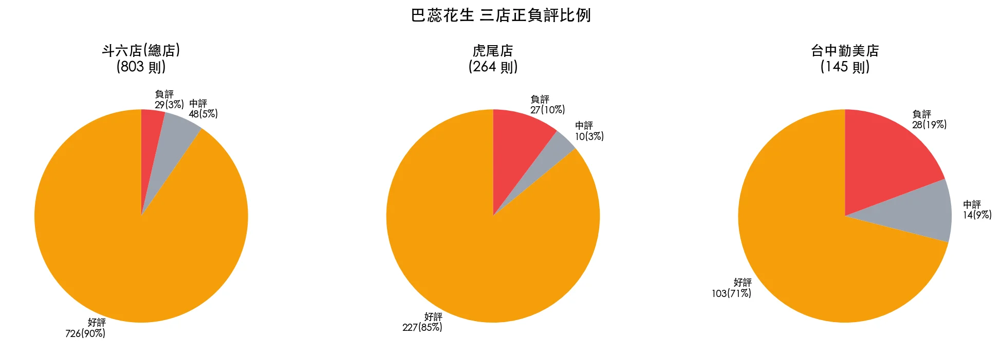
三店正負評比例
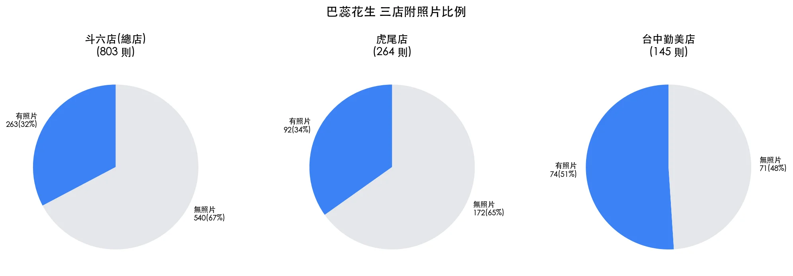
三店附照片比例
二、斗六店（總店）——品牌的根基
4.64★
平均星等
803
總評論
243
提及「好吃」
4%
負評率
🥜 花生是靈魂，口味是護城河
「口味」186 次、「冰淇淋」169 次、「花生」79 次、「開心果」36 次、「濃郁」38 次。口味多元且持續更新是核心競爭力。
「花生香氣非常濃郁，吃得出是真材實料，完全不是一般那種人工香精的味道。那股『炭焙花生』的深層香氣，咬下去的每一口都有種在吃濃縮花生醬冰沙的感覺」
「濟州柑橘優格超推，很清新的口味。優格從來不令人失望，藍莓味很濃郁」
「空間真的沒話說，寬敞明亮且非常乾淨⋯⋯門口還設有洗手台，吃冰前或吃完手黏黏的都可以直接清洗，細節加分！」
📉 年度走勢
| 2018-2019 | 96 則 | 4.62★ | 草創期 |
| 2020-2021 | 103 則 | 4.29★ | 疫情影響 |
| 2022 | 352 則 | 4.83★ | 爆量年 |
| 2023 | 74 則 | 4.43★ | |
| 2024 | 112 則 | 4.71★ | 回升 |
| 2025 | 53 則 | 4.26★ | 微降 |
| 2026 | 13 則 | 4.92★ |
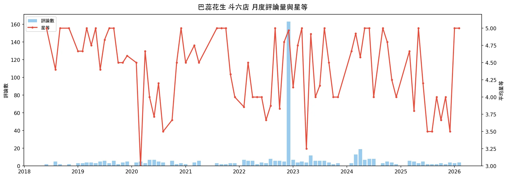
斗六店 月度評論量與星等
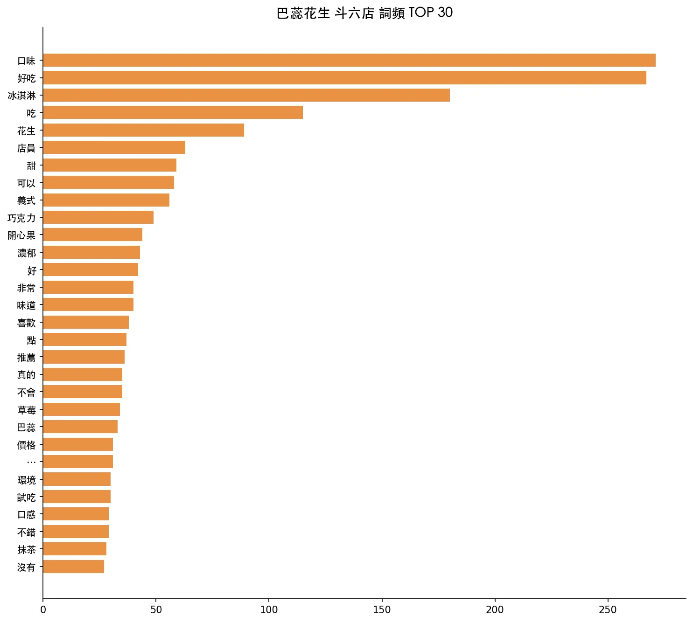
斗六店 詞頻 TOP 30
⚠️ 負評焦點：打烊前態度
「營業時間到 8:00，我 7:32 進店時口味只剩三種，奶昔也全都沒了⋯⋯店員的態度真的讓人感受不到一點服務誠意」
「冷冷的天店員也冷淡，一買完七點馬上收店像在趕客人」
三、虎尾店——穩定的二號店
4.48★
平均星等
264
總評論
80
提及「好吃」
0
店家回覆
「黑金剛花生，選用雲林在地花生，花生的膜是黑色的那種。整體吃起來帶點淡淡的鹹，花生的香氣比較厚實感」
「位於虎尾市場與福安宮之間⋯⋯鬧中取靜，很適合在這停下腳步嚐嚐甜點」
⚠️ 負評焦點：服務態度逐漸惡化
「只點 1 球即使店裡空無一人也不給入座」
「第三次買⋯⋯其中鐵觀音可能是為了清庫存，另外兩種口味只有上面一點點，甜筒底下全是鐵觀音🫠 服務人員態度越來越差」
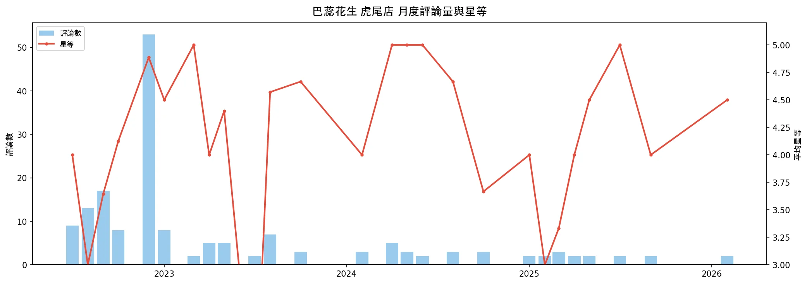
虎尾店 月度評論量與星等
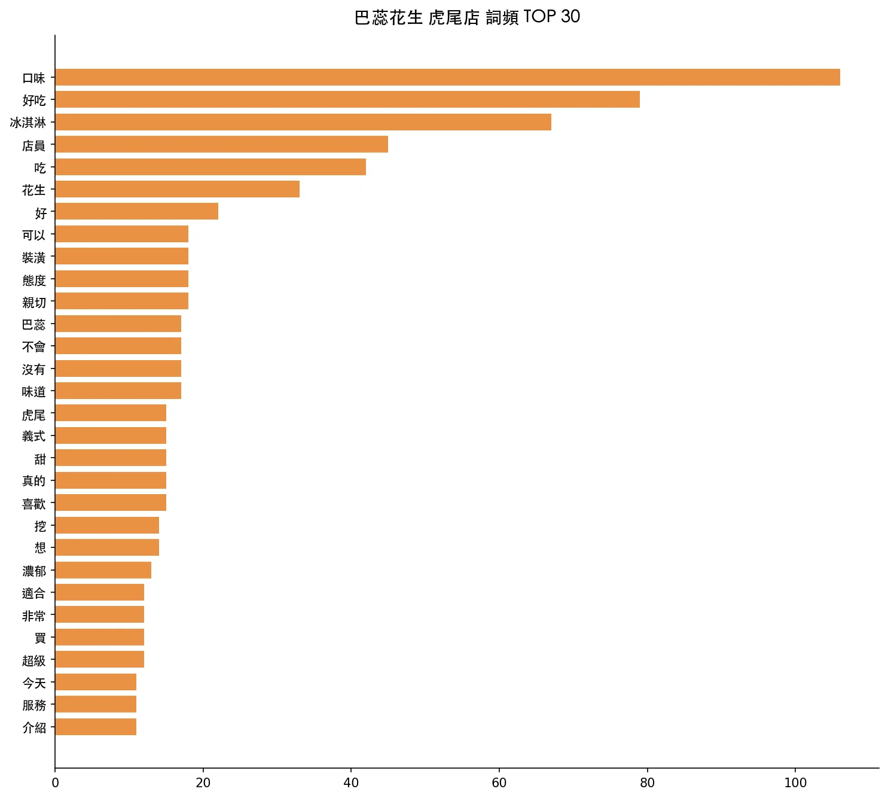
虎尾店 詞頻 TOP 30
四、台中勤美店——擴張的陣痛
3.95★
平均星等
145
總評論
19%
負評率
57
店家回覆（39%）
2025 年開幕，是巴蕊首次離開雲林進軍都會區。星等從開幕的 4.08★ 下滑至 2026 年的 3.52★，負評率 19% 是總店的近 5 倍。
✅ 好評：產品力仍在
「花生香氣非常濃郁，吃得出是真材實料⋯⋯那股『炭焙花生』的深層香氣，咬下去的每一口都有種在吃濃縮花生醬冰沙的感覺」
「竟然有刈包冰淇淋好特別！立刻買刈包香草冰淇淋」
⚠️ 負評：服務與氣氛是致命傷
「蠻難吃的，而且店裡氣氛很凝重，內用感覺很有壓力☹️」
— 1★，2026-04-13
「價格對不起品質😵💫」
店家回覆分析
台中店有 57 則回覆（39%），是三店中最積極的。但回覆風格偏制式化：「非常抱歉⋯⋯我們已立即檢討並加強⋯⋯」。相比老食人 Roger 老闆的真誠個人風格，這種模板式回覆的效果有限——星等仍在下滑。
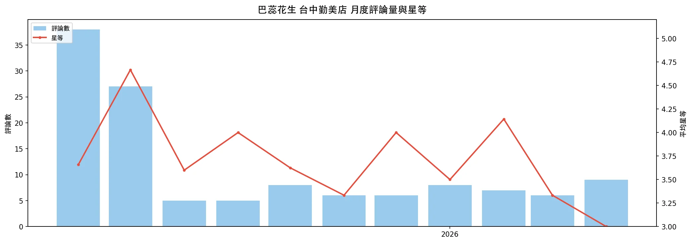
台中勤美店 月度評論量與星等
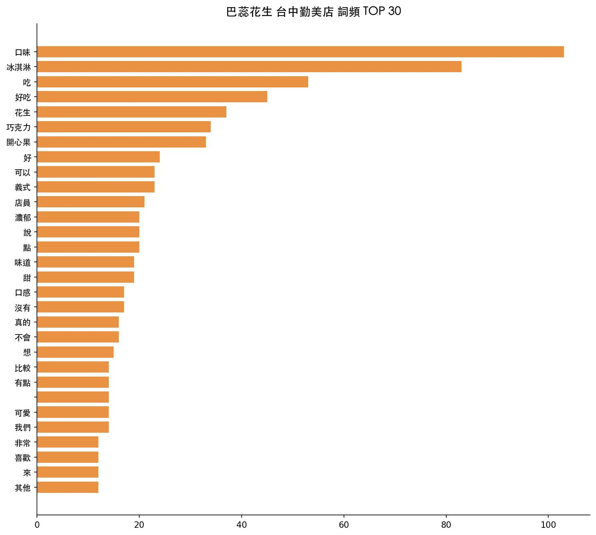
台中勤美店 詞頻 TOP 30
五、三店負評比較
斗六店（29 則負評）
打烊前態度差、口味選擇少、冰淇淋結構問題
虎尾店（27 則負評）
不給入座、清庫存塞口味、態度越來越差
台中店（28 則負評）
氣氛凝重、價格不符品質、服務壓力感
共通模式：「服務態度」是三店共同的弱點
三家店的負評都指向同一個問題——店員態度。斗六店是「打烊前趕客」，虎尾店是「不給入座」「清庫存」，台中店是「氣氛凝重」「有壓力」。產品力沒有問題，但服務體驗正在侵蝕品牌價值。
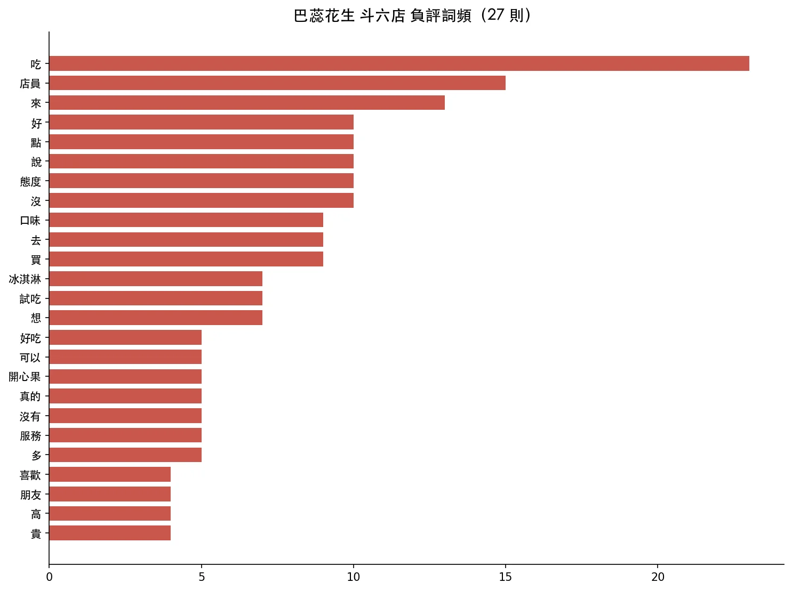
斗六店
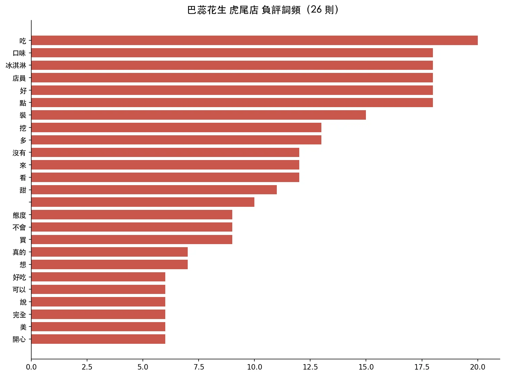
虎尾店
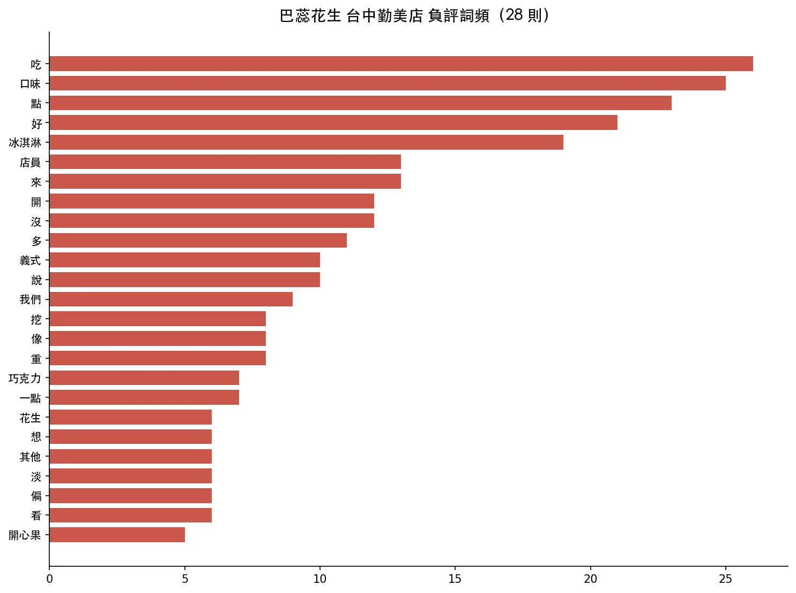
台中勤美店
六、BM25 關鍵詞分析
斗六店
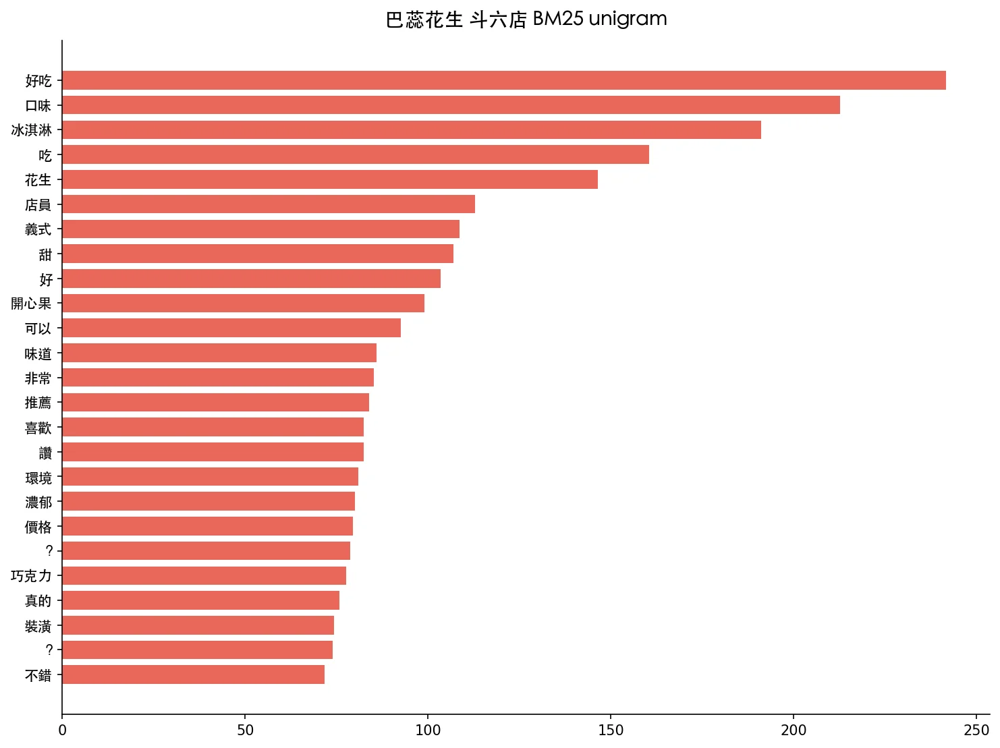
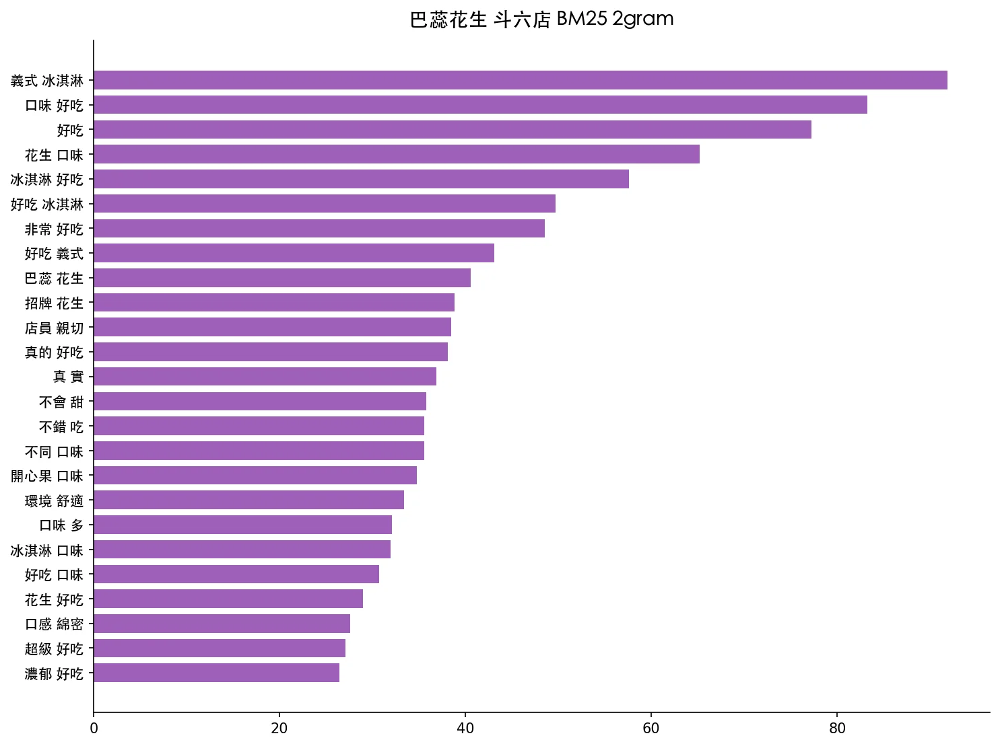
虎尾店
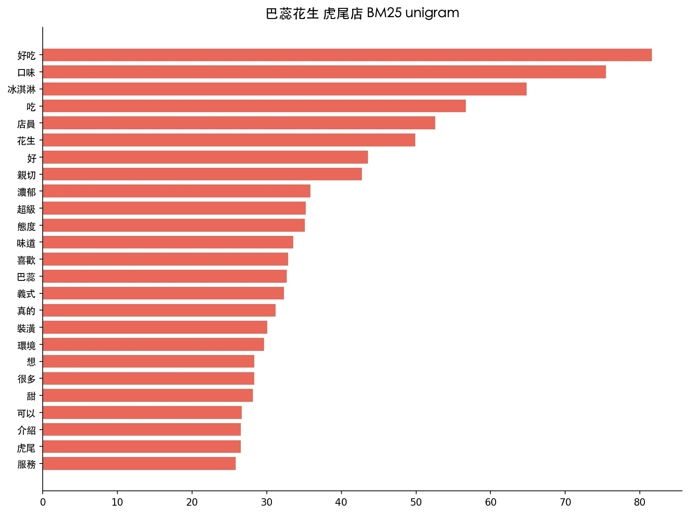
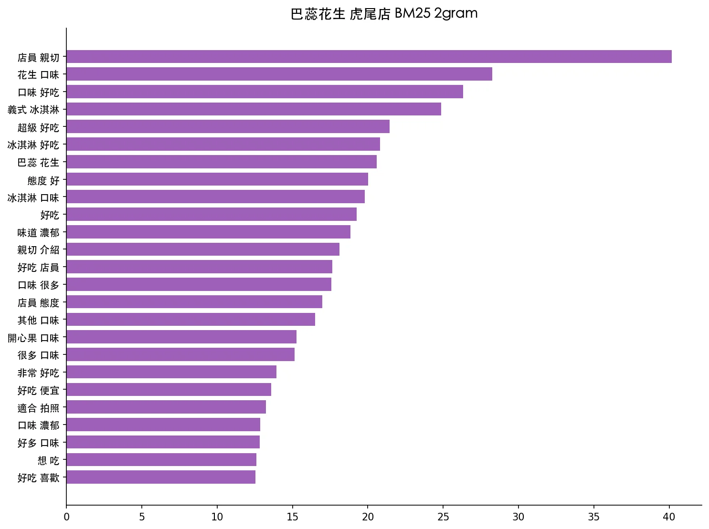
台中勤美店
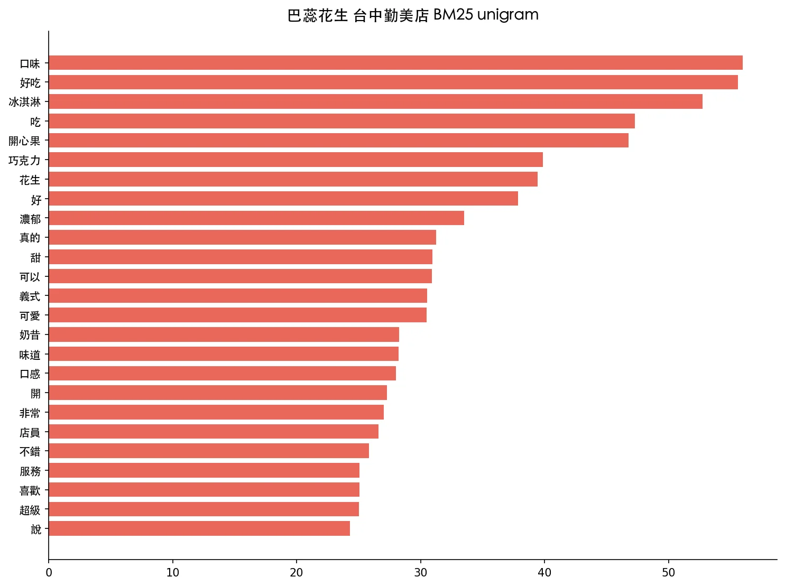
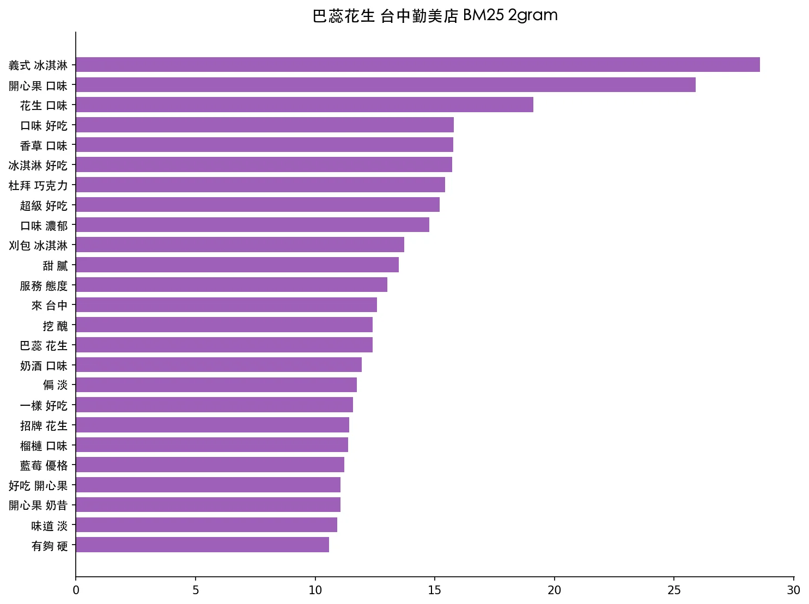
結論
花生冰淇淋是品牌靈魂：「炭焙花生的深層香氣」是客人最常描述的體驗，也是與其他義式冰淇淋店的核心差異化
口味多元是護城河：持續更新口味（柚見金萱、濟州柑橘優格、刈包冰淇淋），讓客人每次來都有新鮮感
分店擴張正在稀釋品牌：斗六 4.64★ → 虎尾 4.48★ → 台中 3.95★，離總店越遠星等越低
服務態度是三店共同弱點：「趕客」「不給入座」「氣氛凝重」——產品力沒問題，但服務正在侵蝕品牌
台中店是關鍵戰場：首次進軍都會區，19% 負評率和持續下滑的星等是警訊。回覆率高但風格制式化，需要更真誠的溝通
雲林在地品牌的都會化挑戰：在斗六和虎尾，「巴蕊」是在地驕傲；在台中勤美，它只是眾多冰淇淋店之一。競爭強度完全不同
「花生香氣非常濃郁，吃得出是真材實料——但離開雲林之後，光靠花生還不夠。」